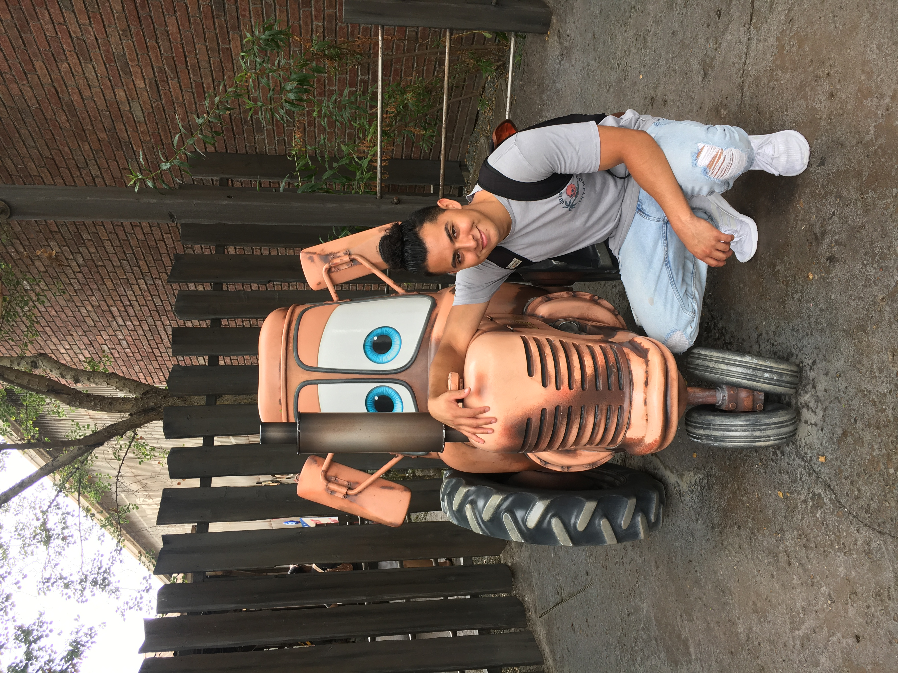

Hello my name is Richard Perez and this is my website!
Education
- Graduated from Da Vinci School of Science (2015)
- Currently attending El Camino College with a major in Computer Science
Skills
- Knowing how to read and develop code in C++ and Java
How I Discovered My Passion
-
After graduating from high school I had no idea what I wanted to do. I knew I
wanted to do something meaningful with my life but I didn't know where to start.
Luckily for me, a friend of mine told me that while I try to figure out what I
wanted to do, I should take some courses at El Camino College. And during my
first year I did just that. I took a few classes, enrolled in programs and joined a
club. However, during my second year I met with my counselor and told them
my dilemma. I explained how I wanted to do something that I loved but I didn't
know where to start. They asked me what I was passionate about and after telling
them I loved video games they recommended that I try computer science (aka
coding). Now I admit, when I would hear about coding I would think of movies
like the matrix. An endless amount of lines of text filling the entire screen of a
computer. However, not knowing where to start, I took a chance and I enrolled in the
intro course for computer science. And this is where my passion for computer science
rooted. I was told to make a very simple program that just printed out "Hello, world!"
I wrote the simple sentence, I added the necessary syntax and I compiled my program.
After seeing my code execute in the command line, I felt something. I felt a sense of
pride, and I felt really really cool. Ever since that moment I continued to take
classes for computer science. And with each class that I took my interest for computer
science grew. Fast forward a few semesters and I am now enrolled in Advanced C++,
still loving computer science.
Click to view my resume
